Thoughts of the Day
(READER DISCRETION HIGHLY ADVISED)
May 24, 2019
Many high-achieving American high school students are convinced that attending a top-tier university will set them up for a life of success. However, recent studies
suggest that, on its own, attending a highly ranked institution does \(not\) have a meaningful impact on a person's life outcome, at least not in monetary terms. In fact, the studies conclude that similarly ambitious
high school students tend to achieve the same levels of financial success in life, regardless of the differences in their universities' rankings. These results are encouraging, as they imply that an individual's "success" in life
depends only on themselves, at least in an immediately quanitifiable way, and not on a lucky break in the college admissions process.
I wanted to see for myself whether or not these results were supported by the data. Using the publicly available College ScoreCard data set provided by the U.S. Department of Education, I
constructed a simple model to analyze whether or not attending a selective university in the U.S. has a meaningful causal effect on one's life outcomes. As a quick sanity check, I looked at a
scatterplot visualization of admission rates versus median earnings of graduates:
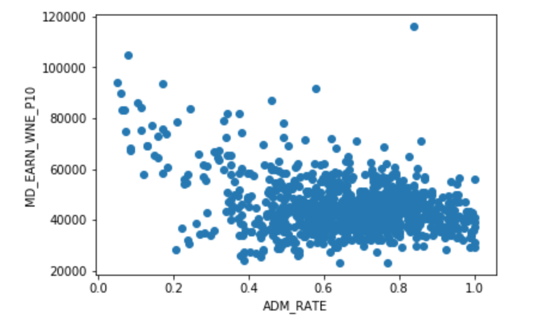
As one would probably expect, there does appear to be a trend here: median earnings generally decrease as the acceptance rate increases.
In particular, this relationship is most pronounced for the most selective universities (i.e., those with an admission rate less than ~30%). Beyond
these selective schools, the relationship between admission rates and median earnings becomes a bit murkier.
In the process of modeling this relationship, I made a couple of key simplifying
assumptions. For one, I measured university graduates' "success" in life using only financial metrics, as they are quanitifiable and objective. Of course, financial outcomes don't tell the whole story about
a person's happiness in life and career fulfillment, but that's an entirely different debate. In addition, I measured the quality of each university's student body using average SAT scores because they are one of the only universal metrics we have
to compare students from different educational backgrounds. Finally, I controlled
for the median family income of students attending each university, as this captures some information about the financial demographics of the universities' students.
Before fitting any model, I sought to verify that there actually were significant relationships present in the data:
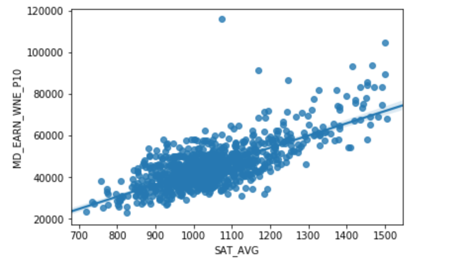
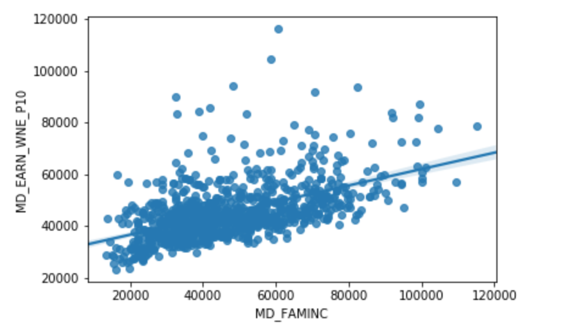
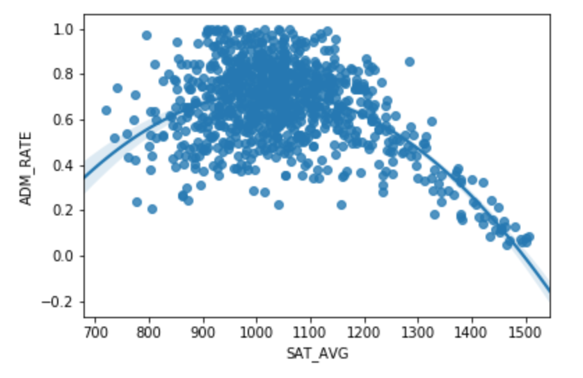
The results weren't surprising. First, both SAT scores and family income profiles are highly correlated with graduates' long-run earnings. People who did well
in high school, and people who come from wealthy families to begin with, tend to have financial success themselves. Similarly, SAT scores are highly correlated with
admission rates, especially at the top. The most selective schools fill their student bodies with top performers on the SAT, either directly or indirectly.
With these sanity checks out of the way, I first considered the following structural model:
$$ \text{EARNINGS} = \beta_0 + \beta_ 1 \text{ADM_RATE} + \beta_2 \text{SAT} + \beta_3 \text{FAM_INCOME} + \epsilon $$
In this model, ADM_RATE is a continuous variable indicating the acceptance rate of the university, SAT is a continuous variable indicating the average SAT score
of enrolled students at the university and FAM_INCOME is the median family income of enrolled students at the university. Intuitively, this model captures information
about the correlation between a university's admission rate and the long-run life outcomes of its graduates while roughly controlling for the quality
of students that attend the university as well as their financial backgrounds coming in to the university. This yielded the following regression output:
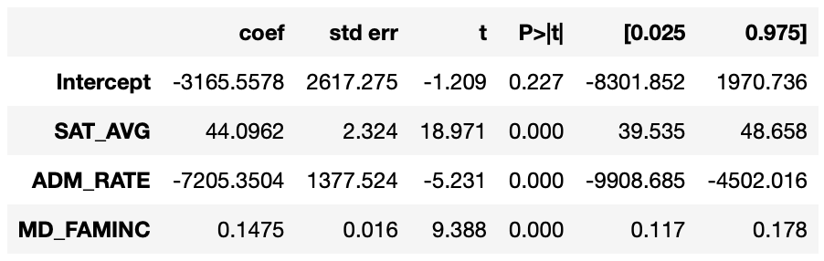
Judging by these results, it seems that there exists a significant correlation between university selectivity and graduates' long-run earnings,
even when controlling for average SAT scores and family incomes. On average, an increase in a university's
acceptance rate by just a single percent corresponds to a $7205 \(decrease\) in graduates' earnings. In other words, the more selective a university
is, the better off its graduates are.
This result is interesting, but it doesn't answer the question of whether or not selectivity has a causal effect on graduate outcomes. In other words,
it doesn't imply anything about whether or not graduates from selective universities are better off \(because\) they attended a selective university or
because of some endogenous confounding factor not explained by the model. My gut feeling was that this relationship is probably not causal. Universities with
highly visible brand names tend to attract far more applicants than relatively anonymous universities, lowering their acceptance rates, but these brand name universities
are not always better than their less well-known counterparts.
To analyze this issue further, I decided to use an instrumental variables (IV) approach, which is designed to handle this issue of endogenous confounding. To accomplish this,
I identified the size of the universities' student bodies (UGDS) as an instrumental variable for admission rates. The idea behind this was that larger universities tend to be
more visible to the public (for one reason or another), and this heightened visibility is probably correlated with application numbers (which is, in turn, correlated with admission rates).
A quick hypothesis test verified this assumption: admission rates are positively correlated with undergraduate enrollment size in a statistically significant way.
I then fitted the following two-stage structural model:
$$\text{ADM_RATE} = \gamma_0 + \gamma_1 \text{UGDS} + \gamma_2 \text{SAT} + \gamma_3 \text{FAM_INCOME } + \xi $$
$$\text{EARNINGS} = \beta_0 + \beta_1 \widehat{\text{ADM_RATE}} + \beta_2 \text{SAT} + \beta_3 \text{FAM_INCOME } + \epsilon$$
Here \(\widehat{\text{ADM_RATE}} \) can be thought of as an estimated admission rate for a university taking into account its enrollment size, average SAT score, and median family income.
Using \(\widehat{\text{ADM_RATE}} \) instead of \(\text{ADM_RATE} \) in the second model is crucial, as it yields a much more reliable estimate for the marginal effect
of admission rates on long-run earnings. Fitting this two-stage model yielded the following output:
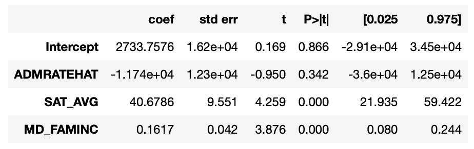
These results are really interesting. After accounting for endogenous factors, it seems that admission rates are not correlated with graduate outcomes
in a statistically significant way, which suggests that a university's selectivity does not have a meaningful causal effect on its graduates' life outcomes.
Not yet completely satisfied, I decided only to consider universities with an average SAT score above a certain threshold. The idea
behind this was to see if the same trends would hold for students who are already high-achieving before entering university. Using a threshold score of 1300, I re-plotted
the relationship between admission rates and long-run earnings, as well as the covariates from earlier:
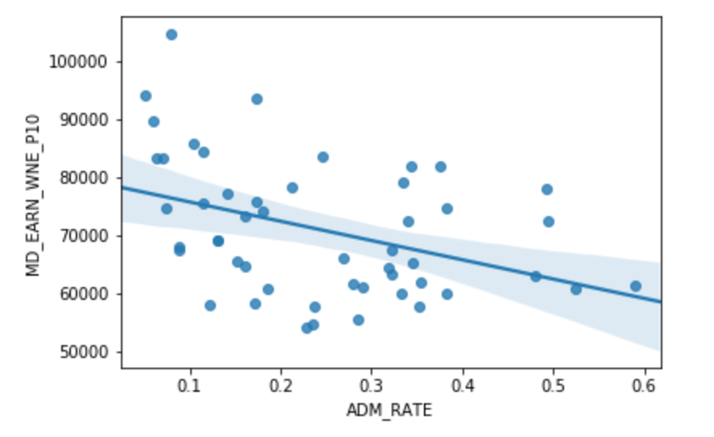
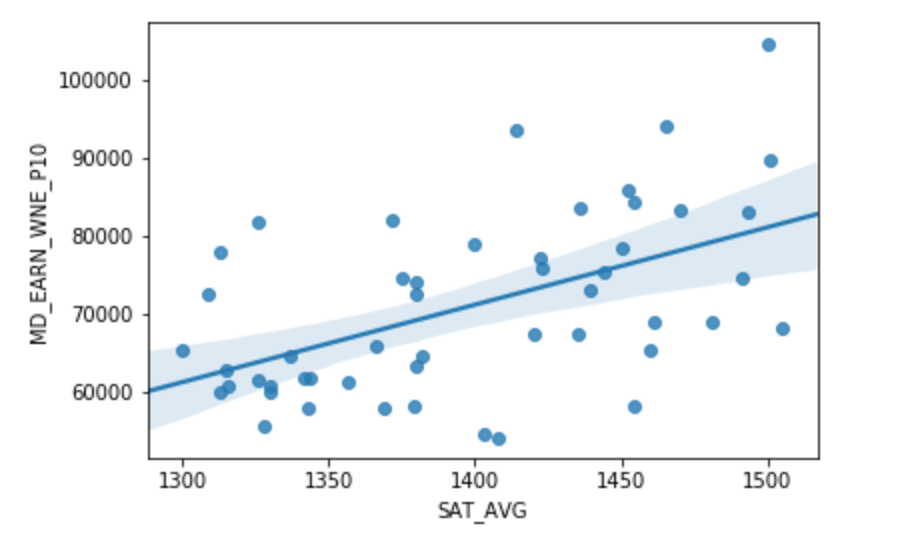
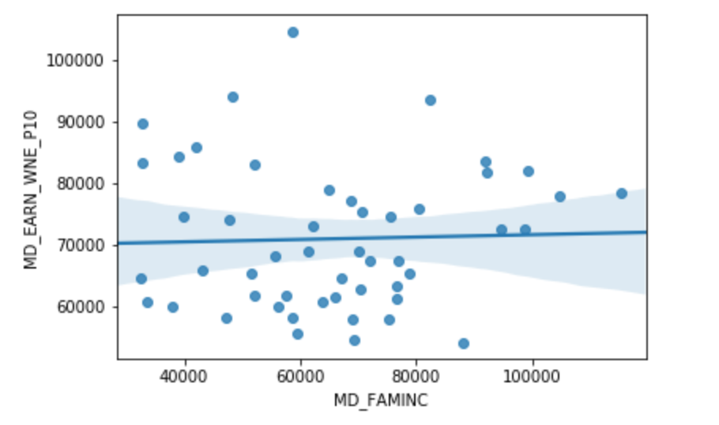
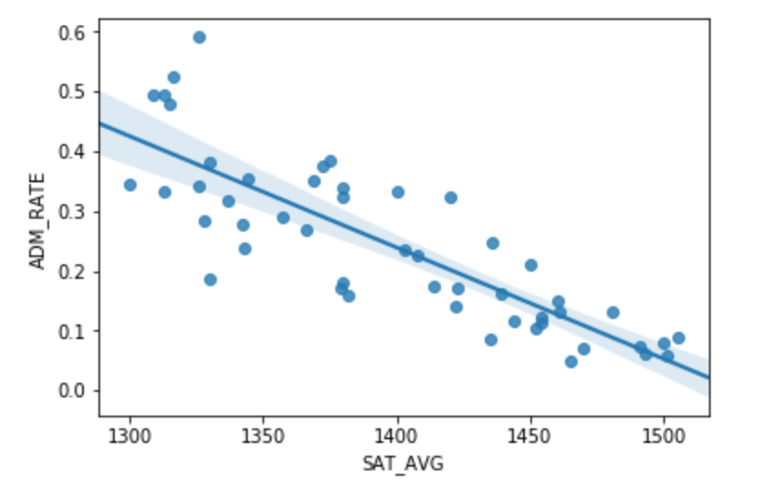
As discovered before, there is a negative correlation between admission rates and long-run earnings, even for students who perform well on the SAT. Similarly,
there are very strong correlations between SAT scores and long-run earnings, as well as SAT scores and admission rates. On the other hand, there does not
appear to be a strong correlation between family income profiles and long-run earnings. This suggests that family wealth isn't as relevant for the best high school students as it
is for more average students in the overall landscape of American high schools.
Fitting the first structural model mentioned above yielded the following regression output:
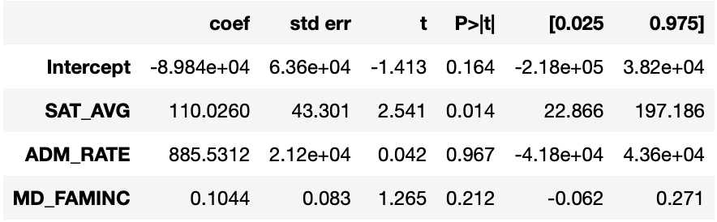
Interestingly enough, we see that there does not appear to be a statistically significant correlation between admission rates and median earnings. These results seem to confirm the findings of the two-stage model from before:
for accomplished and driven students, attending a selective university does not have a meaningful causal effect on their long-run professional success in life.
But what about students who come from disadvantaged backgrounds? Maybe for these particular students, the effect of attending a selective university actually is meaningful, as it
might provide an unprecedented opportunity for upward mobility. To answer this question, I considered two more models, each incorporating interaction effects:
$$ \text{EARNINGS} = \beta_0 + \beta_ 1 \text{ADM_RATE} + \beta_2 \text{MINORITY} + \beta_3 \text{ADM_RATE} \cdot \text{MINORITY} + \beta_4 \text{SAT} + \beta_5 \text{FAM_INCOME} + \epsilon $$
$$ \text{EARNINGS} = \beta_0 + \beta_ 1 \text{ADM_RATE} + \beta_2 \text{PCT_LOW_INCOME} + \beta_3 \text{ADM_RATE} \cdot \text{PCT_LOW_INCOME} + \beta_4 \text{SAT} + \beta_5 \text{FAM_INCOME} + \epsilon $$
Here MINORITY and PCT_LOW_INCOME are continuous variables indicating the percentage of minority (black and hispanic) and low income students at a university, respectively. These yielded the following
regression outputs:
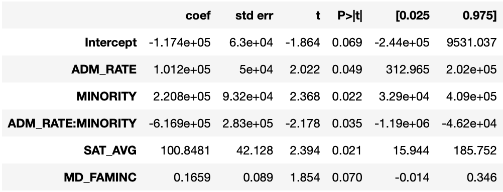
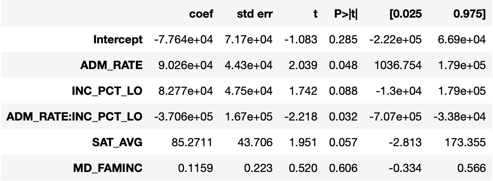
These results are fascinating. In both cases here, admission rates are correlated with long-run earnings in a statistically significant way and the interaction effects are also significant!
More specifically, in the first model we see that
$$ \frac{\partial \text{EARNINGS}}{\partial \text{ADM_RATE}} \approx 100000 - 620000 \cdot \text{MINORITY} $$
and in the second model we see that
$$ \frac{\partial \text{EARNINGS}}{\partial \text{ADM_RATE}} \approx 90000 - 370000 \cdot \text{PCT_LOW_INCOME}. $$
Observe that in both cases, the marginal effect of increasing admission rates is negative, and this marginal effect increases in magnitude
as the percentage of minority and low income students increases, respectively. This suggests that for many disadvantaged students, attending a
selective university actually does correspond to greater long-run earnings, even when controlling for their SAT scores (remember that all universities here
even had an average SAT score of at least 1300 out of 1600). To put it another way, for students who come from disadvantaged backgrounds, there is a meaningful benefit to attending a selective university in its own right!
So, does attending a highly selective have a meaningful causal effect on one's success in life? For students who come from advantaged backgrounds, the answer is
probably no. However, for students who come disadvantaged backgrounds, the answer could very well be yes.
Of course, it's difficult to conclude anything definitive from this analysis (just as it's difficult to conclude anything definitive about causality ever), but
at least these results are encouraging.